ムカサリ絵馬4/山形県
死者の婚礼を描いたムカサリ絵馬をたずねて山形に行ってきたよ。
ムカサリ絵馬とは何じゃい？という方はこちらからどうそ
ムカサリ絵馬
ムカサリ絵馬2
ムカサリ絵馬3
山形県の一部でひそかに伝えられる習俗、ムカサリ絵馬に関してはこのサイトでも度々とりあげさせていただいているが、ムカサリ絵馬研究において画期的な出来事があった。
2010年東北大学において「ムカサリ絵馬」展が開催されたのだ。
これまで世間ではあまり注目されてこなかったムカサリ絵馬にスポットを当てた野心的な企画であり、私もわずかながらそのお手伝いをさせていただけたことは光栄の至りであった。
ムカサリ絵馬展の図録にも拙文を掲載させていただいているのでそちらと併せて御覧いただければより立体的にムカサリ絵馬の世界が捉えられると思うので、可能であればぜひ御覧いただきたい。
尚、八画文化会館2号でもムカサリ絵馬について特集を組んだのでそっちも併せて御覧いただくとチョー嬉しいです（買ってね）。

てなわけで今回訪れたのは村山地方の中央部。
前回、前々回は村山地方の南限、北限域からムカサリ絵馬の奉納習俗を照射しようという試みだったが、今回はそれを踏まえて再び村山地方の中央部のムカサリ絵馬を訪問、さらにまとめとしてムカサリ絵馬の聖地ともいえる小松沢、黒鳥観音を再訪してムカサリ絵馬について改めて考えてみよう、という目論見である。
龍泉寺
最初に訪れたのは東根市の郊外にある龍泉寺。
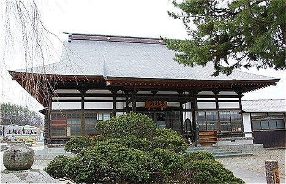
典型的な地方のお寺である。
一般的にムカサリ絵馬は最上三十三観音を中心とした、いわゆる祈祷寺に多く見られるというのが定説だ。
実際これまで訪れてきたお寺の多くはそういった檀家を持たないお寺が多かった。
これには理由がある。
檀家を持つローカルなお寺はその信仰圏が狭い地域に限定されがちだ。
一方、檀家を持たない祈祷寺は逆に広範囲の信仰圏を持つ。
さらに最上三十三観音の札所ともなればその知名度は最上、村山地方全域に広がる。すなわちより多くの人がムカサリ絵馬を奉納する体制が出来上がっているのだ。
さらに私見だが、ムカサリ絵馬を奉納するにあたって地元のお寺よりも祈祷寺を選ぶのにはもうひとつ理由があるように思えてならない。
それは未婚で死んだわが子が仮の結婚式とはいえ一人前になったことを内外に広くアピールするため、なのではなかろうか？
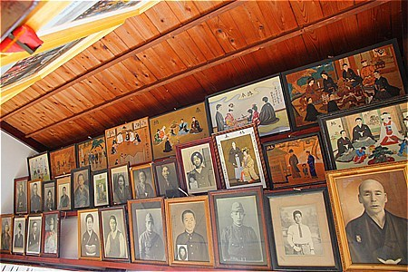
ムカサリ絵馬では幼くして亡くなった子供や若者への哀れみや個人的な救済、という側面ばかりが取りざたされるが、実は社会的な側面もあることを見逃してはならない。
伝統的な日本の社会構造の中では祖先を崇拝することは非常に重要なことであった。
結婚し、子を成してはじめて一人前とされる社会では未婚で死んだ人は特殊なケースとカテゴライズされるのだ。
そのような未婚の死者がムカサリ絵馬を奉納することにで、バーチャルながらも初めて先祖として扱ってもらえるのだ。
実はこの考え方は日本だけではなく、中国韓国、ひいては東南アジアにまで広がっている、ある意味祖先崇拝を行う地域では普遍的に存在する考え方なのである。
前置きが長くなったな。すまんな。そんなこんなで龍泉寺である。
本堂の欄間には数多くの絵馬が掲げられている。
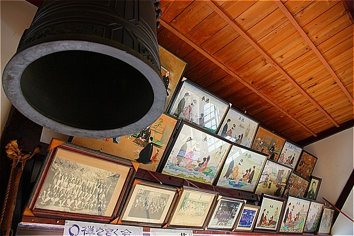
半分は遺影や記念写真、残り半分の大半がムカサリ絵馬である。
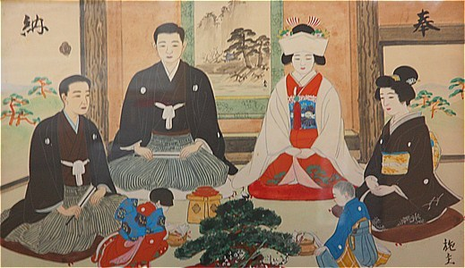
地元の人以外、訪れる人もあまりいないであろうお寺の欄間で繰り広げられる無言の婚礼。
今まで幾度も見てきた光景だが、震えるほど美しく、そして物悲しい絵の数々。
↓こちらは新郎が軍服を着ている。大正7年の奉納。
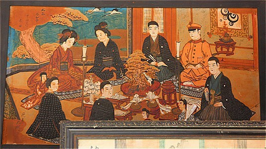
↓これはムカサリ絵馬ではないが、チョット気に留めておいていただきたい。
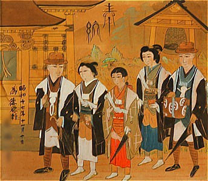
画面上中央部にある独特なフォントの「奉納」という文字、画面の人物全員に共通するどんぐりマナコ。
登場人物全員が恐ろしいまでに無表情なのが猛烈に印象的な絵だ。
この龍泉寺のムカサリ絵馬で最も着目すべきはこれらの絵馬。
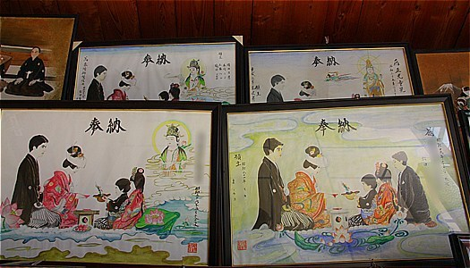
同じ絵師の手によるものと思われる絵馬だ。
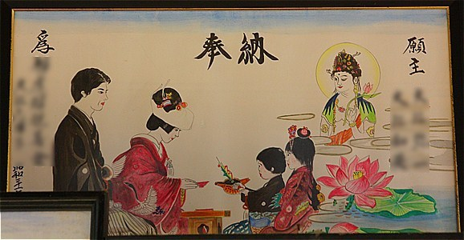
伝統的なムカサリ絵馬は屋内の風景を少し上から俯瞰して描写したものが大半だが、この絵馬は真横から新郎新婦を見ている構図で仲人や屋内の婚礼を象徴するモノ、たとえば床の間の飾りや盆の松などが略されている。
代わりにメインの新郎新婦と対峙するかのように酌をする子供（この地方ではオナジョウブと呼ぶ）が強調され、さらにその後ろには観音サマが見守っている、という図式になっている。
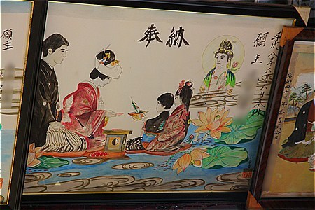
↑こちらも同じ構図の絵馬。
↓こちらは観音サマがいないタイプ。代わりに媒酌人なのだろうか後姿の男性が付き添っている。
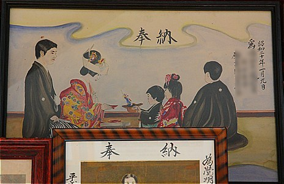
これも同様の絵馬。絵柄は一緒だが色使いやタッチに差があるのでもしかしたら別の人が模写したものかもしれない。
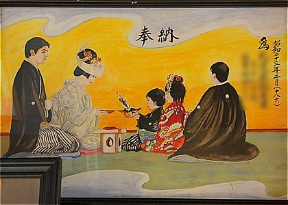
いずれにせよ筆の運び方、衣の陰影の付け方などから絵心のない素人の作ではないことが伺える。
なお、同じ絵柄の絵馬は山形市の唐松観音でも見たことがある。
その際にも述べたが、どこかふわふわした現実感のなさを強く感じさせる絵だ。
他のムカサリ絵馬がリアリズムを追求しているのに対してどこか諦観めいたものが滲み出ているような印象を受ける絵だ。
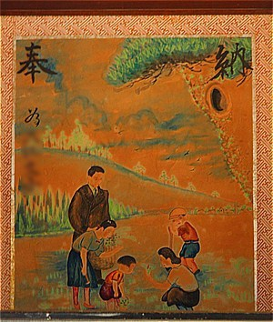
↑ムカサリ絵馬ではないがこれも故人の供養のための絵馬である。
被奉納者（つまり故人）として女性の名前が記されていた。恐らくは独身で亡くなった女性の死後の世界で家族を持って幸せに暮らしていることを願って遺族が描いたものだろう。
ムカサリ絵馬のようなハレの場ではなく、このような何でもない日常の光景の描写は派手さはないが、じっくり見ているとグッと来るねえ。
ひとつだけ外陣の欄間の内側に掛けてあったムカサリ絵馬。
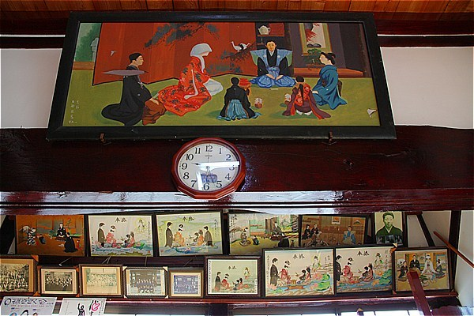
色使いといい、大きさといい他の絵馬を圧倒する勢いであった。
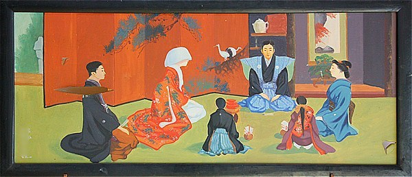
永昌寺
東根市の西に位置する河北町にある永昌寺。こちらもローカルな寺院である
「ムカサリ絵馬」展でもこのお寺の絵馬が数点出品されていた。
来意を告げると若いお坊さん(副住職か？）が脚立を貸してくれた。感謝感謝。
というわけで欄間に掛けられた絵馬をじっくりと間近で拝見させていただいた。
来迎図。もちろんこれも供養のための絵額である。
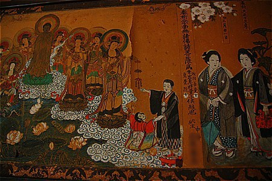
これも来迎図。床の間の奥から観音サマがドドーンと御来迎。世が世なら「貞子！」とか言われそうな衝撃的なシーン。
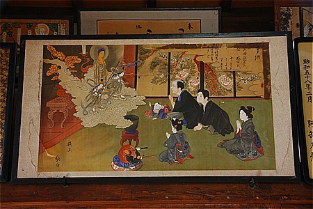
このような奉納絵馬などには神仏パワーの放出シーンが良く描かれている。その表現方法は様々で、こちらの絵では堂内に充満するサイキックパワーが火灯窓越しに漏れているのを子連れの御婦人が浴びている、という具合。
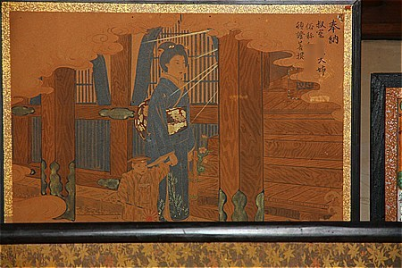
こちらは子供の供養。
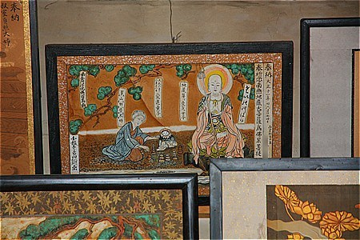
画面には右からお地蔵さん、小さな子供、老女が描かれている。
画中に子供の戒名と共に「地藏尊と壹才の女子」と記載されている。
従ってこの絵馬は１才で亡くなった女の子を供養したものと判別できるが、隣に座って石積みに手を貸している老女の戒名も書き込まれている。
幼女の没年が大正６年、老女が大正８年、奉納が大正11年。
断言は出来ないが、賽の河原の石積みという画題から言って子供の供養のために奉納したのは間違いない。
子供の７回忌に合わせて絵馬を奉納するついでにお婆ちゃんも入れとくか、といった感じだったのかもしれないですね。
これも同じ絵師による絵額。
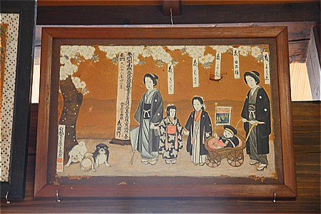
左下の犬が堪らんですね。
明治39年奉納の絵馬。厳密にはムカサリ絵馬ではないが、この手の絵馬としてはかなり古い部類に入る。
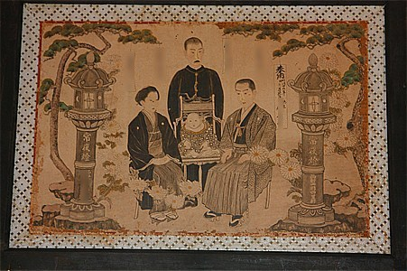
色数は少ないがしっかりとメッセージが伝わってくる絵だ。左右の夫婦を覆うような菊の花の演出が効いている。
こちらは家族写真風絵額。
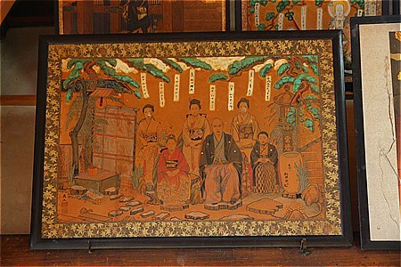
先の3点の絵もそうなのだが、木の枝からつりさがった短冊に各々の名前や戒名が書かれている。
画面上に無理矢理文字情報をインサートするのではなく、あくまでも絵の中にあるパーツとして描かれているところに上品さを感じる。
というわけでムカサリ絵馬である。
昭和20年に亡くなった人のムカサリ絵馬。
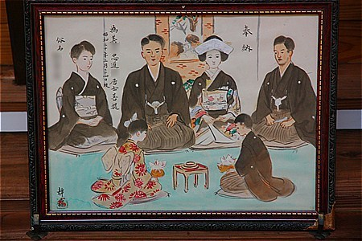
戒名から判別するに戦死した兵隊さんであろう。
同じ絵師による絵馬があった。
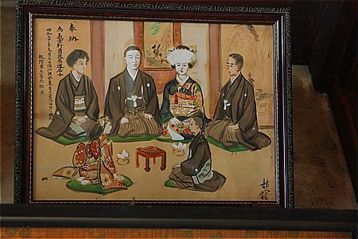
なんとなく印象が違うなー、と思ったら新郎の顔だけが妙にリアルに描き込まれている。
他の人が黒目がちのポンチ絵風なだけにその風貌は際立っている。
恐らく生前の姿に似せて描いたのだろう。あるいは顔だけは遺族が描いたのか。いずれにせよ印象深い一枚だった。
珍しい2画面セットの絵馬。
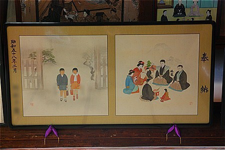
右は婚礼風景。左は生まれてきた子供、ということになろうか。
繰り返すがムカサリ絵馬は個人的な遺族の救済のための習俗という意味合いとは別に未婚の死者を「先祖」に「昇格」させる儀式という一面も併せ持つ。
バーチャルとはいえ結婚したことと同時に子供も儲けたということも念を押して表現した絵馬なのだろう。
単独での三々九度のシーンだが、派手な色使いの割には淡さというか危うさが画面全体から漂っている。
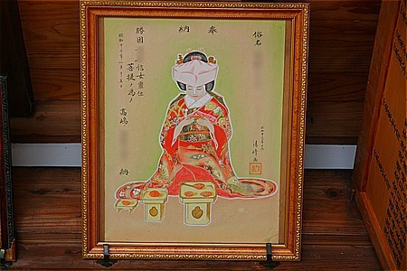
人物の周りを薄い緑で縁取っているのもより一層危うさや儚さが強調されている。
華やかで悲しい、このムカサリ絵馬の主題を綺麗に表現しきった名作だと思う。
同じ作者による供養絵。
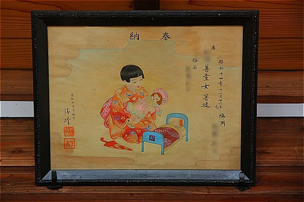
きいちのぬりえ的などこか物悲しい空気が画面を支配している。
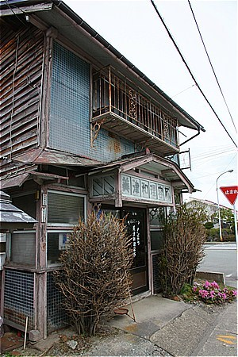
お寺の隣にあった超レトロな理容室。なんと現役でした。
この後、何箇所かムカサリ絵馬を訪ねて河北町周辺のお寺を訪ねたが、残念ながらあまり多くの絵馬に出会うことはなかった。
いくつかのお寺は本堂を新築した際に片付けてしまったり処分してしまったようだ。
ムカサリ絵馬の奉納は平成に入ってからも続いているどころかむしろ増えている。
これはテレビやネットでムカサリ絵馬の存在を知った山形県外の人からの奉納が増えているからだという（当サイトもその片棒を担いでいるんだろうなあ）。
今まで村山地方のあちこちのお寺でムカサリ絵馬を見てきたが、この習俗は二極化しているように感じた。
ひとつは平成以降も奉納が続いている、むしろ盛んになっているお寺。そしてもうひとつは終戦直後をピークに昭和後期辺りで奉納がストップしているお寺。
一概には言えないが、どうしても前者は若松観音や山寺といった全国的にも名の通ったメジャー寺院、後者は檀家を持つローカルな寺院、という図式が浮かび上がってきてしまう。
特に県外からの奉納者は当然ながら前者に集中するだろう。
私は民間信仰から派生した習俗が時代ともに変化していく事は当然のことだし、それくらい度量の深い習俗でなければ時代を越えて生き残れないだろうと思っているので、この二極化に関しては仕方のないことだとは思っている。
ついでに言えばムカサリ絵馬の奉納習俗は今や、山形県のローカルな習俗という範疇を越えて東日本全域に広がりを見せているといっても過言では…あるのだが、今後そうなる可能性は大いにあると思っている。
そんな訳で、今でも新しいムカサリ絵馬が増え続けているお寺を改めて見に行ってみる。
小松沢観音（再訪）
小松沢観音は村山市の山中にある寺で最上三十三観音の20番札所でもある。
以前、堂内が暗くてよく見えなかったので今回はライトを持っての再訪となった。
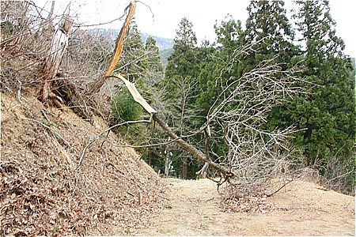
お寺に行く途中からすでに不穏な雰囲気。今年は全国的に積雪が多かったためこのようにあちこちで被害があったようで…
やがて現れた観音堂。
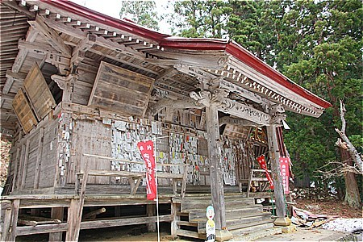
んん？なんだか様子がおかしいぞ。
回り込んでみると…
うぎゃ！
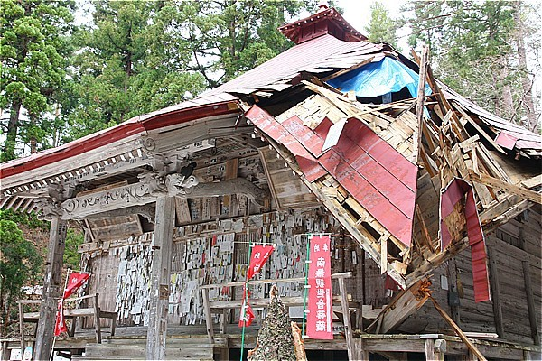
屋根が壊れちゃっているではないか！
積雪のせいだろう。何ということだ！
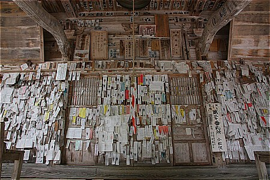
これは中には入れないだろうなー、と思いつつそ〜っと扉を開けてみることに…
開いた！
お邪魔しますよ… っと。
屋根が完全に抜けてブルーシートが張ってあるもののほぼ吹きさらし。
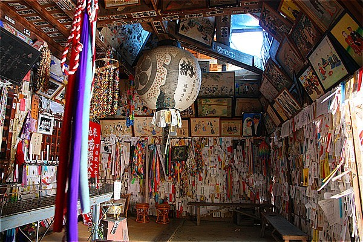
前回暗くてよく判らなかったが、こうしてみるとやはり絵馬と巡礼札がひしめく特濃空間だ。
見上げれば梁にまでムカサリ絵馬が掛けられていた。
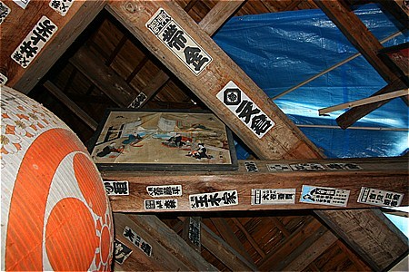
隅柱も壊れてしまったので、コーナーの部分から外光が差している。
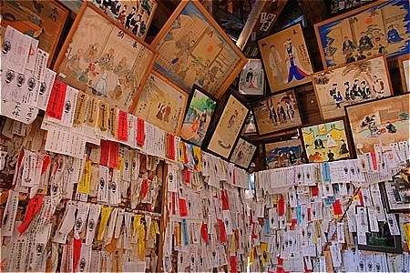
明るくて結構なのだが、屋根が壊れちゃった所為なので手放しで喜ぶべきことでもなく、なんとも複雑だ。
なんとも痛ましい状態だが、ムカサリ絵馬を拝見します。
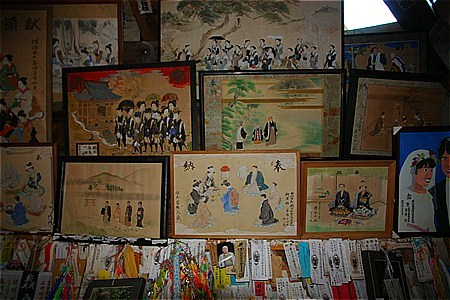
屋根にまで届く勢いでムカサリ絵馬が堆積している。
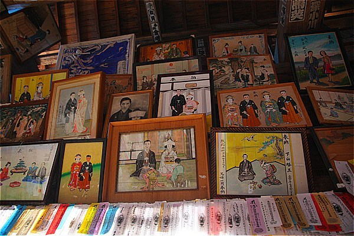
こうして大量の婚礼風景に見下ろされるとゾクッとしてくる。
昔の婚礼風景を描いたムカサリ絵馬と戦後、特に高度経済成長期以降に奉納されたムカサリ絵馬の印象の違いは登場人物の視線の違いだ、と私は考える。
こちら昭和4年。
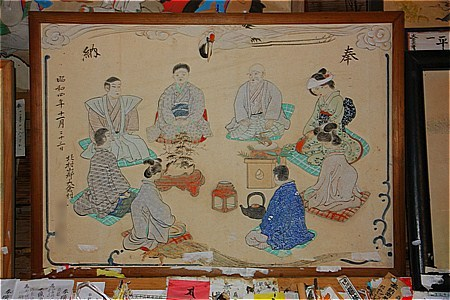
新郎新婦を中心に人物が円状に配置されている。そのためほとんどの登場人物は斜めか後ろ向きだ。
昭和20年奉納。
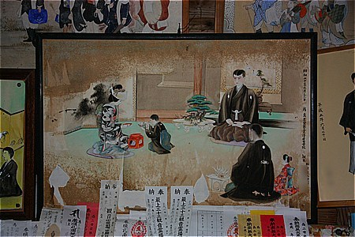
人数が少なくても基本的に円状の人物配置は変わらない。従って人物は斜めか後ろ向き。
新婦がうつむき加減であることにも着目いただきたい。
一方こちらは昭和43年奉納のもの。
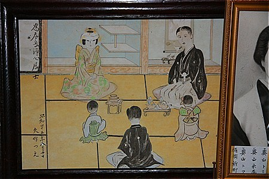
同じ屋内の婚礼風景だが新婦は正面を向き顔を上げてこちらを見ているような格好になっている。
新郎のほうも体の向きは斜めだが、顔を正面に向けてわざわざこちらを見るようなポーズをとっている。
奉納時期不明だが恐らく昭和後期のものだろう。
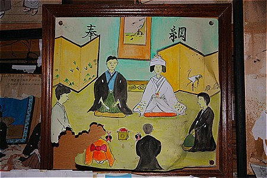
円状の人物配置というよりも四角いフォーメーションになっており、真正面、真横、真後の姿勢となっている。
こうなってくると正面の新郎新婦はこちら側と正対することになる。
さらに時代がくだって婚礼写真ふうのツーショット絵馬になると当たり前だが完全にカメラ目線。
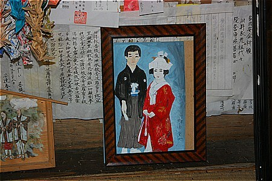
つまり昭和後期以降のムカサリ絵馬が多ければ多いほど「見ているこちらが見られている」感覚に陥りやすい、ということになる。
↓こんな感じ
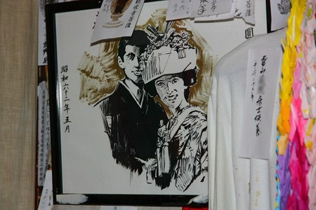
そういった意味では一枚一枚の奉納年は確認していないがここ小松沢観音のムカサリ絵馬は新しいものが多い、ということになる。あくまでも感覚だけど、ね。
ムカサリ絵馬ではないが、何とも味わい深い絵。
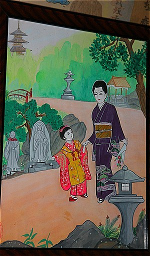
母子で墓参に行く途中の絵柄。誰の供養のための絵なのだろう？画中の母？子？それとも墓に眠っているであろう父？
先ほどの龍泉寺にあった絵馬と同じ作者によるムカサリ絵馬。
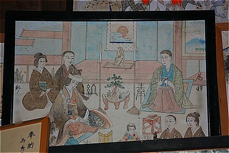
他にも複数の絵馬を手がけている。プロの絵師とは思えないが独特の世界が構築されてますねー。
決して広くないお堂だが、一枚一枚見ているとあっという間に時間が経ってしまう。
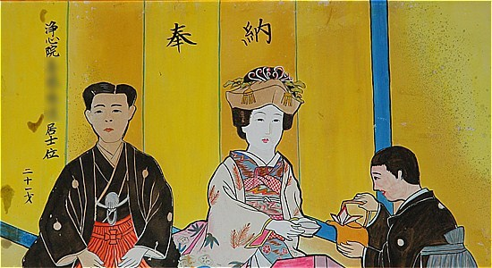
それだけ味わい深いムカサリ絵馬が多くある、ということ。
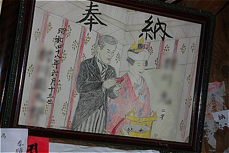
新しい絵馬もずいぶん増えていた。
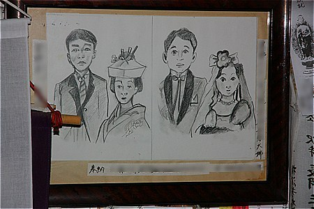
でもやっぱりこの絵馬が好きだなあ。
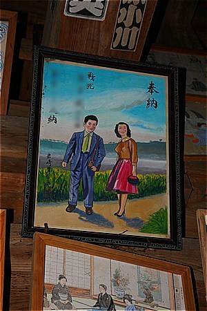
観音堂の前には後生車が林立していた。
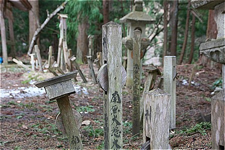
黒鳥観音（再訪）
最上三十三観音の１９番札所である黒鳥観音。

お寺の規模としては小さいが、ここも小松沢観音同様、何者をも寄せ付けないほどの濃密な信仰空間が出来上がっている。
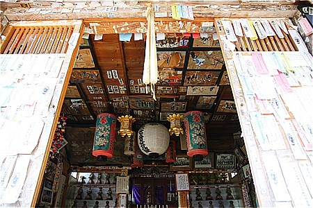
もはや壁も天井も見えない。全て巡礼札とムカサリ絵馬によって埋め尽くされている。
ぐるっと見てみましょう
黒鳥観音を再訪して強く感じたのは、ここは極めて東北的な空間だ、という事。
東北地方ではこの寺のように半ばパブリックな場である信仰施設が個人的な供養の装置に占領されてしまっているところが多い。
何と言うか、個人的な信仰ツールに共同幻想のための装置が乗っ取られちゃった感覚。
この光景は厳密には仏教が生み出したものではない。
仏教が伝来する以前から脈々と受け継がれてきた民族的な祖先崇拝と仏教が混ざり合った果てに出現した光景といえよう。
それは一言でいえばむき出しの信仰である。
以前、ムカサリ絵馬を掲げているお寺の若い住職が「本当はこんなの仏教の教義と正反対な考えなんです」と仰っていた。
確かに輪廻から解脱するのが仏教の究極の目的でありテーマだとすれば死後の世界で結婚して幸せに暮らすなどという考え方は「まっとうな」仏教からはまず生まれないだろう。
彼は仏教大学で正当な仏教を学んだ「真面目な」お坊さんだったが、それでもこの土地でお寺を運営するということは、そんな矛盾に目をつむらなければならないのだ、と苦々しげに言っていた。
でも、いいじゃない、それで。
残念ながら若い住職の欲する原理主義に近い仏教をその寺で極めることは難しいのかもしれない。
でもそこには民間信仰と混ざり合ったもうひとつの日本的であり東北地方独特の仏教が厳然と存在するのだ。
死者の記憶を大事にし、死後の世界をリアルに捉える、インドの人が2千年何百年前に考えたのとはまるで違う宗教かもしれないが、頭ごなしに否定するものでもないと思う。
なぜならムカサリ絵馬を奉納するのもイタコに口寄せさせるのもオシラサマを家に祀るのも全て何らかの根拠があるのだから。
そんな在来仏教と民間信仰とがぐっちゃぐちゃに混ざり合って渾然一体となったリアルな姿をそのままトレースしたのがここ黒鳥観音なのだ。
おっとムカサリ絵馬を見ようじゃないの。
明治４０年奉納の絵馬。
かなり初期のムカサリ絵馬だ。人物が多くごちゃごちゃしているがそれはそれで華やかさというか賑やかさがあってイイですね。
昭和６３年奉納のムカサリ絵馬。金屏風の前に座る新郎新婦のツーショット。シンプルな構図だ。
ここに描かれているような自宅での婚礼、あるいは料亭などでの婚礼が昭和の末までは行われていたというとだろうか。
昭和４４年に亡くなった青年の為の絵馬。
親が描いたのだろうか。稚拙ながらも床の間の柱や新婦の背後の祝儀に力点が置かれているところを見逃してはなるまい。
こちらもオールドスクールなムカサリ絵馬。
画面中央に赤い線が見えるが実はこの絵、元々掛け軸としてしつらえたものを額装してある。赤い線はかつて掛け軸として飾られていた頃の名残だ。
掛け軸タイプのムカサリ絵馬というものは見たことがないが、もしかしたら家に飾っていたケースもあったのだろうか？これは新たなる発見であった。
金屏風の前の婚礼風景。
同じ作者による絵馬。
奉納者は別人だが住所が同じ集落。
知り合い同士で同じ人に描いてもらったのだろうか？
こちらも同じ人による絵馬。
もちろん絵の上手下手はあるが、これは美術作品ではないので絵の出来で優劣などつかないのである。
パリッとした絵ですね。
以前訪れた時よりもニュースタイルの絵馬が増えていた。
ムカサリ絵馬の奉納習俗はスタイルがどんどん変化していくので、このようなツーショットスタイルも最早新しいスタイルとは言い難くなってきている。
これは前回もありました。
「
前回訪問時の写真と見比べてみたら壁に掛かっているムカサリ絵馬は結構入れ替わっているようだ。
前回はなかった1メートル四方もある大作。
千葉の人の奉納であった。
実はこの絵馬（大きすぎて絵馬というのも違和感あるが）、先述の「ムカサリ絵馬」展でも展示されており、一際目立っていた。
今回最ものけぞった奉納。
お寺のお堂の中には似つかわしくないピンクと白のシャツ。
そこには兄弟にあてて「お兄ちゃん結婚しました」と書いてある。
つまりこの2枚のシャツは新しいスタイルのムカサリ絵馬なのだ。
ムカサリ絵馬の奉納習俗がはじまって約100年。その間、婚礼風景からツーショット、合成写真、果てはシャツ奉納まで。時代に合わせてどんどん変化し続けている。
それは民間信仰であるがゆえの奉納者の自由な発想とそれを許容する東北地方のお寺のあり方の賜物だろう。
時代によってスタイルを変えていく現在進行形の習俗として今後もムカサリ絵馬の行く末をビシビシと注目していきたい。
2012.04.
珍寺大道場 HOME